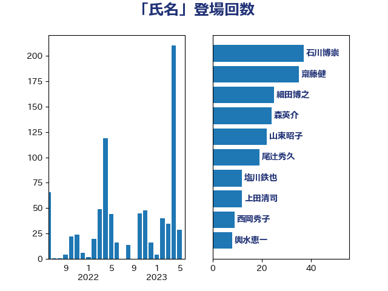

単語「氏名」

| 石川博崇 | 公明党 | 37 回 |
| 齋藤健 | 自由民主党 | 35 回 |
| 細田博之 | 自由民主党 | 25 回 |
| 森英介 | 自由民主党 | 24 回 |
| 山東昭子 | 自由民主党 | 22 回 |
| 尾辻秀久 | 無所属 | 19 回 |
| 塩川鉄也 | 日本共産党 | 12 回 |
| 上田清司 | 国民民主党 | 12 回 |
| 西岡秀子 | 国民民主党 | 9 回 |
| 輿水恵一 | 公明党 | 8 回 |
| 足立康史 | 日本維新の会 | 8 回 |
| 山口俊一 | 自由民主党 | 8 回 |
| 寺田稔 | 自由民主党 | 8 回 |
| 仁比聡平 | 日本共産党 | 8 回 |
| 本村伸子 | 日本共産党 | 7 回 |
| 後藤祐一 | 立憲民主党 | 7 回 |
| 東国幹 | 自由民主党 | 6 回 |
| 谷公一 | 自由民主党 | 5 回 |
| 葉梨康弘 | 自由民主党 | 5 回 |
| 福島みずほ | 社会民主党 | 5 回 |
| 田畑裕明 | 自由民主党 | 5 回 |
| 海江田万里 | 立憲民主党 | 5 回 |
| 河野太郎 | 自由民主党 | 5 回 |
| 松本剛明 | 自由民主党 | 5 回 |
| 斉藤鉄夫 | 公明党 | 5 回 |
| 川田龍平 | 立憲民主党 | 5 回 |
| 若宮健嗣 | 自由民主党 | 4 回 |
| 笠井亮 | 日本共産党 | 4 回 |
| 後藤茂之 | 自由民主党 | 4 回 |
| 岸田文雄 | 自由民主党 | 4 回 |
| 宮路拓馬 | 自由民主党 | 4 回 |
| 堤かなめ | 立憲民主党 | 4 回 |
| 友納理緒 | 自由民主党 | 4 回 |
| 佐々木さやか | 公明党 | 4 回 |
| 中曽根弘文 | 自由民主党 | 4 回 |
| 高市早苗 | 自由民主党 | 3 回 |
| 門山宏哲 | 自由民主党 | 3 回 |
| 田村まみ | 国民民主党 | 3 回 |
| 浜田聡 | NHK党 | 3 回 |
| 本庄知史 | 立憲民主党 | 3 回 |
| 山添拓 | 日本共産党 | 3 回 |
| 山下芳生 | 日本共産党 | 3 回 |
| 安江伸夫 | 公明党 | 3 回 |
| 奥野総一郎 | 立憲民主党 | 3 回 |
| 古川直季 | 自由民主党 | 3 回 |
| 高橋千鶴子 | 日本共産党 | 2 回 |
| 阿部弘樹 | 日本維新の会 | 2 回 |
| 鎌田さゆり | 立憲民主党 | 2 回 |
| 鈴木義弘 | 国民民主党 | 2 回 |
| 鈴木宗男 | 日本維新の会 | 2 回 |
| 金子恭之 | 自由民主党 | 2 回 |
| 藤巻健太 | 日本維新の会 | 2 回 |
| 芳賀道也 | 国民民主党 | 2 回 |
| 米山隆一 | 立憲民主党 | 2 回 |
| 田村貴昭 | 日本共産党 | 2 回 |
| 田村智子 | 日本共産党 | 2 回 |
| 牧山ひろえ | 立憲民主党 | 2 回 |
| 渡辺周 | 立憲民主党 | 2 回 |
| 清水真人 | 自由民主党 | 2 回 |
| 浦野靖人 | 日本維新の会 | 2 回 |
| 沢田良 | 日本維新の会 | 2 回 |
| 東徹 | 日本維新の会 | 2 回 |
| 日下正喜 | 公明党 | 2 回 |
| 平口洋 | 自由民主党 | 2 回 |
| 岡本あき子 | 立憲民主党 | 2 回 |
| 山本佐知子 | 自由民主党 | 2 回 |
| 小池晃 | 日本共産党 | 2 回 |
| 塩田博昭 | 公明党 | 2 回 |
| 古川禎久 | 自由民主党 | 2 回 |
| 加藤勝信 | 自由民主党 | 2 回 |
| 前川清成 | 日本維新の会 | 2 回 |
| 伊藤岳 | 日本共産党 | 2 回 |
| 井上哲士 | 日本共産党 | 2 回 |
| 鰐淵洋子 | 公明党 | 1 回 |
| 高橋克法 | 自由民主党 | 1 回 |
| 鈴木馨祐 | 自由民主党 | 1 回 |
| 鈴木俊一 | 自由民主党 | 1 回 |
| 西村康稔 | 自由民主党 | 1 回 |
| 緑川貴士 | 立憲民主党 | 1 回 |
| 篠原孝 | 立憲民主党 | 1 回 |
| 神津たけし | 立憲民主党 | 1 回 |
| 石原宏高 | 自由民主党 | 1 回 |
| 田村憲久 | 自由民主党 | 1 回 |
| 田中健 | 国民民主党 | 1 回 |
| 津島淳 | 自由民主党 | 1 回 |
| 河西宏一 | 公明党 | 1 回 |
| 池田佳隆 | 自由民主党 | 1 回 |
| 永岡桂子 | 自由民主党 | 1 回 |
| 武井俊輔 | 自由民主党 | 1 回 |
| 森屋隆 | 立憲民主党 | 1 回 |
| 梅村みずほ | 日本維新の会 | 1 回 |
| 柳ヶ瀬裕文 | 日本維新の会 | 1 回 |
| 林芳正 | 自由民主党 | 1 回 |
| 松川るい | 自由民主党 | 1 回 |
| 杉尾秀哉 | 立憲民主党 | 1 回 |
| 斎藤アレックス | 国民民主党 | 1 回 |
| 平林晃 | 公明党 | 1 回 |
| 平木大作 | 公明党 | 1 回 |
| 岬麻紀 | 日本維新の会 | 1 回 |
| 岡田直樹 | 自由民主党 | 1 回 |
| 山本博司 | 公明党 | 1 回 |
| 尾崎正直 | 自由民主党 | 1 回 |
| 小西洋之 | 立憲民主党 | 1 回 |
| 小宮山泰子 | 立憲民主党 | 1 回 |
| 守島正 | 日本維新の会 | 1 回 |
| 大島九州男 | れいわ新選組 | 1 回 |
| 大口善徳 | 公明党 | 1 回 |
| 大串正樹 | 自由民主党 | 1 回 |
| 坂本祐之輔 | 立憲民主党 | 1 回 |
| 吉良よし子 | 日本共産党 | 1 回 |
| 吉川沙織 | 立憲民主党 | 1 回 |
| 古庄玄知 | 自由民主党 | 1 回 |
| 倉林明子 | 日本共産党 | 1 回 |
| 伊佐進一 | 公明党 | 1 回 |
| 仁木博文 | 無所属 | 1 回 |
| 中谷一馬 | 立憲民主党 | 1 回 |
| 中条きよし | 日本維新の会 | 1 回 |
| 中川貴元 | 自由民主党 | 1 回 |
| 三宅伸吾 | 自由民主党 | 1 回 |
| こやり隆史 | 自由民主党 | 1 回 |